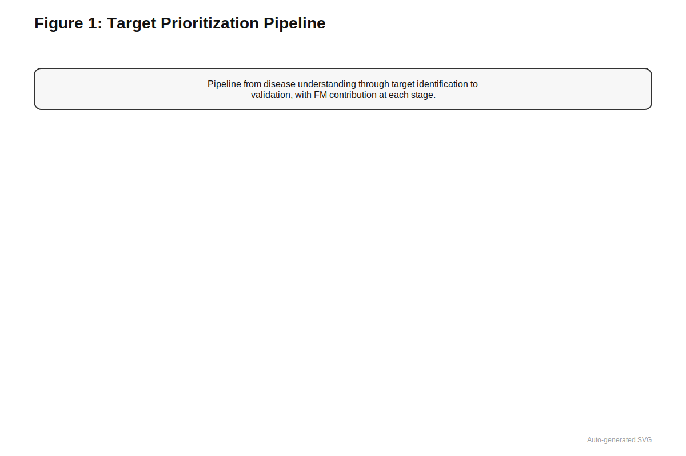
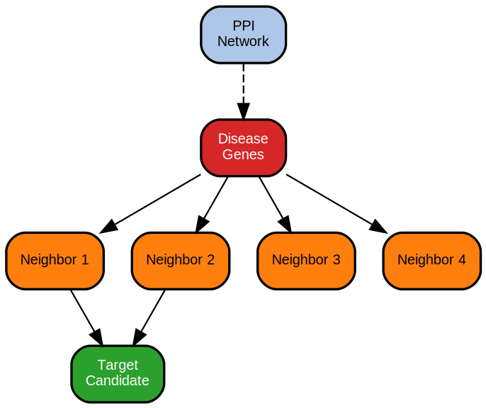
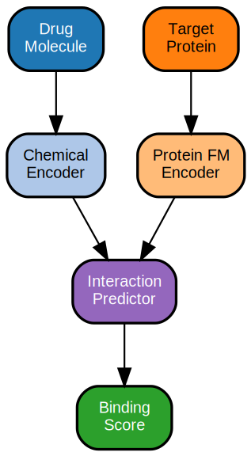
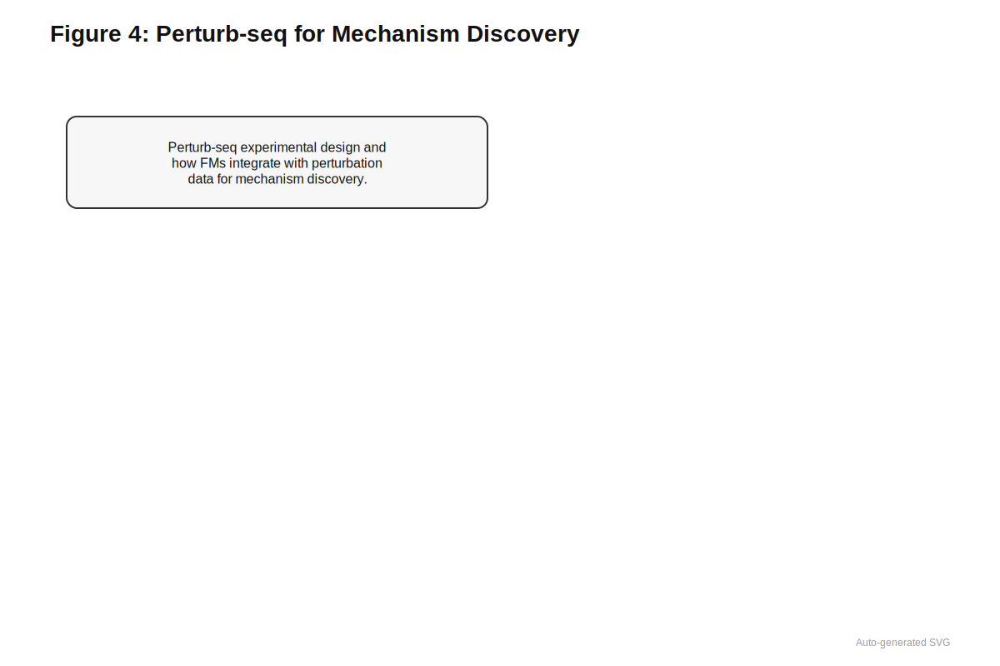
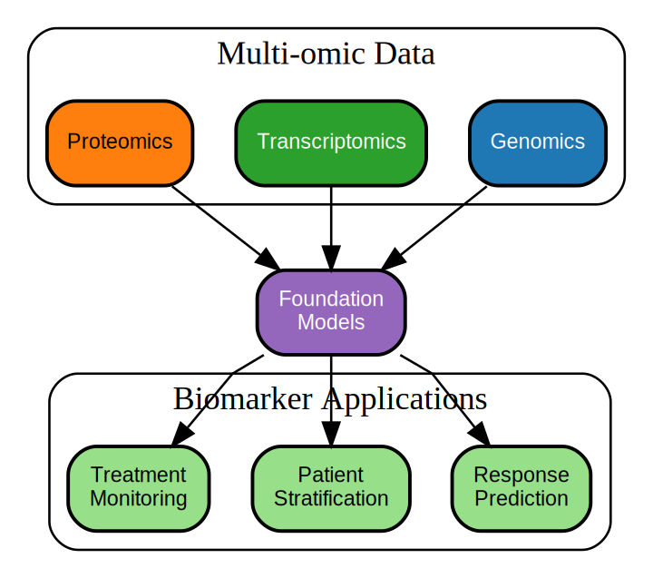

29 Drug Discovery
Nine out of ten drug candidates fail. Most were doomed before they started.
Prerequisites: This chapter builds on variant effect prediction (Chapter 17), protein language models (Section 15.1), regulatory foundation models (Section 16.2), and network analysis (Chapter 21). Familiarity with GWAS concepts (Chapter 3) and fine-mapping (Section 3.4) is essential. The confounding concepts from Chapter 12 are particularly relevant for understanding validation challenges.
Learning Objectives: After completing this chapter, you should be able to:
- Explain why genetically supported targets succeed at higher rates in clinical trials
- Describe pipelines for aggregating variant-level predictions into gene-level target evidence
- Contrast network-aware and single-gene approaches to target discovery
- Evaluate drug-target interaction predictions using protein and chemical embeddings
- Design foundation model-guided functional genomics screens
- Apply foundation model features to biomarker development and patient stratification
- Navigate strategic choices for foundation model deployment in industry settings
Estimated time: 45-60 minutes
More than 90% of drug candidates that enter clinical trials fail. They fail because they targeted the wrong gene. They fail because the patient population was too heterogeneous for a single mechanism to succeed. They fail because preclinical models predicted efficacy that did not translate to humans. They fail because safety signals emerged only at scale. The pharmaceutical industry spends billions of dollars on programs that will not produce approved therapies, and the cost of this attrition propagates to the drugs that do succeed: higher prices, longer development timelines, and reduced investment in diseases with smaller markets. The fundamental bottleneck is not generating drug candidates but identifying, early in the process, which targets and which patients offer the highest probability of success.
Human genetics provides one of the strongest predictors of clinical success. Targets with genetic support succeed in trials at roughly twice the rate of targets without such support; human mutations that cause phenotypes resembling the therapeutic goal provide direct evidence that modulating the target affects the disease.
PCSK9 exemplifies the power of genetic evidence for drug development. In 2003, researchers identified rare gain-of-function mutations in PCSK9 that caused familial hypercholesterolemia. In 2006, loss-of-function variants in PCSK9 were discovered that reduced LDL cholesterol by 28% and coronary heart disease risk by 88% in carriers—a natural experiment showing that PCSK9 inhibition would be safe and efficacious.
This genetic validation de-risked PCSK9 as a target. Multiple pharmaceutical companies developed PCSK9 inhibitors (evolocumab, alirocumab), which received FDA approval in 2015—just 12 years from gene discovery to approved drug, remarkably fast for novel targets. Clinical trials confirmed what genetics predicted: ~60% LDL reduction and significant cardiovascular event reduction.
Compare to targets without genetic support: The average Phase II success rate for novel mechanisms is approximately 25%. For PCSK9, the mechanism was validated by human genetics before the first patient was dosed. This is what “2x success rate for genetically supported targets” looks like in practice.
Yet exploiting this signal is harder than it sounds. Genome-wide association studies have identified thousands of disease-associated loci, but most point to noncoding regions where the causal gene is unclear. Even when a gene is implicated, the direction of effect often remains ambiguous. Translating a statistical association into a validated therapeutic target typically requires a decade of work and hundreds of millions of dollars in follow-up studies.
The two-fold improvement in clinical trial success rates for genetically supported targets represents one of the most robust findings in drug development. This effect persists across therapeutic areas and development phases. Foundation models amplify this advantage by providing mechanistic context that explains why a genetic association matters, not just that it exists.
Genomic foundation models offer a path through this translational bottleneck. Rather than treating each target identification program as a de novo effort, foundation models encode biological knowledge learned across millions of sequences into reusable representations. A variant effect predictor can score any missense mutation’s functional impact without task-specific retraining. A regulatory model can predict expression consequences of noncoding variants across tissues. Network models can propagate genetic signals to identify pathway relationships invisible in single-gene analyses. These capabilities connect to drug discovery through target prioritization and genetic validation, network-aware approaches that identify modules and repurposing opportunities, foundation model-guided functional genomics screens, and biomarker development for patient stratification.
29.1 Genetic Foundation of Target Selection
Human genetics provides uniquely causal evidence for target selection. Unlike expression correlations or pathway membership, genetic associations reflect the consequences of lifelong modulation of gene activity in human populations. Multiple analyses over the past decade have demonstrated that genetically supported targets succeed in clinical trials at roughly twice the rate of targets without genetic evidence [Citation Needed]. Targets implicated by Mendelian disease genetics, genome-wide association study (GWAS) hits, or functional variants show higher probabilities of success in phase II and III trials compared to targets selected through other means.

This empirical observation motivates building pipelines where genetic architecture serves as a first-class input to target identification. Genomic foundation models extend this logic by providing richer biological context and enabling transfer learning across diseases and modalities. Rather than simple “variants near gene X,” foundation models encode regulatory architecture, chromatin state, three-dimensional genome interactions, cell-type specificity, and perturbation responses. A single model trained on diverse genomic and multi-omic data can be reused for multiple diseases and therapeutic areas, analogous to how language models transfer across domains.
29.1.1 From Variant-Level Predictions to Gene-Level Evidence
Drug discovery teams rarely care about individual variants per se; they care about genes and pathways. The fundamental challenge in target identification is therefore aggregating variant-level information into gene-level evidence that can guide target selection.
Before reading about the workflow below, consider: if you have thousands of GWAS-significant variants across hundreds of loci, what information would you need to convert these statistical signals into a ranked list of drug targets? What makes this problem difficult?
Consider a typical workflow. Starting from GWAS summary statistics (see Section 2.3.2), statistical fine-mapping methods identify credible sets of potentially causal variants at each locus (see Section 3.4). Sequence-based foundation models then score each candidate variant for regulatory or coding impact. Protein-centric variant effect predictors such as AlphaMissense, GPN-MSA, and the missense components of AlphaGenome combine protein language models, structural information, and evolutionary conservation to assess coding variants (Section 15.1; ?sec-ch14-protein-vep) (Cheng et al. 2023; Benegas et al. 2024; Avsec, Latysheva, and Cheng 2025; Brandes et al. 2023). Regulatory foundation models including Enformer, Borzoi, and long-context DNA language models predict the consequences of noncoding variants on chromatin accessibility, transcription factor binding, and gene expression (Section 16.2; ?sec-ch14-enformer-vep).
The critical step is connecting variants to genes. For coding variants, this mapping is straightforward: the variant lies within a gene’s coding sequence, and protein-level scores directly inform that gene’s candidacy. For noncoding variants, the mapping requires integrating chromatin conformation data (Hi-C, promoter-capture Hi-C), enhancer-gene predictions from models like Enformer, and expression quantitative trait locus (eQTL) data that empirically links variants to gene expression changes (see Section 2.5). Fine-mapping approaches such as MIFM can help distinguish truly causal regulatory variants from correlated passengers, tightening the map from GWAS locus to variant to target gene (Section 3.4) (Wu et al. 2024; Rakowski and Lippert 2025).
The following table summarizes the key evidence types for connecting variants to target genes:
| Evidence Type | Variant Class | Data Source | Strength | Limitation |
|---|---|---|---|---|
| Direct coding | Missense, LoF | Sequence annotation | Unambiguous gene link | Rare variants, small effect sizes |
| eQTL colocalization | Regulatory | GTEx, tissue-specific cohorts | Empirical gene expression link | Tissue-specific, LD confounding |
| Chromatin contact | Regulatory | Hi-C, pcHi-C | Physical enhancer-gene link | Resolution limits, cell-type specific |
| FM enhancer prediction | Regulatory | Enformer, Borzoi | Functional prediction | Validation required |
| Network proximity | Both | PPI, pathway databases | Pathway context | Indirect evidence |
Gene-level aggregation proceeds by summarizing variant effects across all variants linked to each gene. For a given gene, this summary might include the burden of predicted loss-of-function variants in cases versus controls, the strongest regulatory variant effect sizes predicted by foundation models, constraint metrics indicating the gene’s intolerance to damaging variation (see Section 2.2.3), and pleiotropy scores reflecting associations with other traits that might indicate safety liabilities or broader biological importance. From a foundation model perspective, the core idea is to treat gene-level evidence as an aggregation problem over high-dimensional variant embeddings. Rather than manually defining a handful of summary statistics, variant embeddings and predicted functional profiles can feed into downstream models that learn which patterns matter most for disease.
29.1.2 Linking Genetics to Target Safety and Efficacy
Classical human genetics has established several heuristics for target selection that foundation models can reinforce and extend. Human knockout individuals, people carrying biallelic loss-of-function variants, provide natural experiments on the consequences of gene inactivation. Protective variants that reduce disease risk suggest the directionality of therapeutic intervention: partial inhibition of a protein may be beneficial rather than harmful. Pleiotropy, meaning associations with many unrelated traits, may signal safety liabilities if modulating a target affects multiple physiological systems (see Section 3.8).
Foundation models sharpen these assessments. Fine-mapping methods combined with regulatory foundation models can distinguish causal variants from those merely in linkage disequilibrium with causal variants (see Section 3.3). Variant effect scores from protein and regulatory models approximate effect sizes, helping differentiate subtle modulators from catastrophic loss-of-function mutations. Multi-task predictions across chromatin marks, transcription factor binding, expression, and splicing provide mechanistic hypotheses for how risk loci affect biology, moving beyond statistical association toward functional understanding.
The output of this workflow is a ranked list of candidate targets with structured evidence that can be compared across diseases and programs. Each target comes annotated with the strength of genetic evidence (effect sizes, fine-mapping probabilities), predicted mechanisms (coding versus regulatory, affected tissues), constraint information (tolerance to loss-of-function, essentiality), and druggability features (protein family, structural information, existing ligands).
A target gene has strong GWAS support (p < 5e-8) but high pleiotropy (associated with 50+ traits in PheWAS) and high constraint (pLI > 0.99). Should this gene be prioritized or deprioritized as a drug target? What additional information would help decide?
This gene should be approached cautiously and requires deeper investigation. High constraint suggests the gene is essential for viability, indicating potential toxicity from inhibition. High pleiotropy suggests modulating it affects many systems, raising concerns about on-target side effects. Additional information needed includes: which specific traits are associated (are they safety-relevant?), human knockout data from biobanks, tissue expression patterns, and whether the GWAS associations suggest the direction of effect aligns with therapeutic goals.
29.2 Network-Aware Target Discovery and Repurposing
Individual genes do not operate in isolation. Proteins interact in complexes, genes participate in pathways, and regulatory networks coordinate cellular responses. Even with excellent variant-to-gene mapping, the biological context of a target shapes its therapeutic potential. Network-aware approaches propagate genetic signals through these relational structures to identify modules, bottleneck nodes, and repurposing opportunities.
29.2.1 Propagating Genetic Signals Through Networks
The basic intuition is that GWAS signals concentrated in a pathway or protein interaction module provide stronger evidence than isolated hits. A single gene with modest genetic support but tight functional connections to several strongly implicated genes may be a more attractive target than an isolated hit with stronger statistics but unclear biology.
Network-based methods integrate noncoding GWAS loci, regulatory annotations, and protein-protein interactomes to identify disease genes and evaluate drug repurposing opportunities in complex diseases. Graph neural network architectures (?sec-ch18-canonical-architectures) can learn to propagate genetic evidence through interaction networks, scoring each gene not just by its direct genetic association but by its network context. The key methodological insight is that genes can be embedded jointly with their network neighbors, allowing the model to capture how genetic perturbations in one gene might affect functionally related genes. This propagation reflects biological reality: proteins function in complexes and pathways, so disrupting one component often affects the entire module. A mutation in a kinase may have minimal direct phenotypic effect if compensatory kinases exist, but that same mutation becomes consequential if the compensatory kinases are also compromised elsewhere in the pathway. Network propagation captures these dependencies that single-gene analysis misses.
Single-gene approaches treat each target independently based on its direct genetic association. Network-aware approaches recognize that an isolated GWAS hit with unclear mechanism may be less actionable than a gene with modest direct evidence but strong connections to well-validated disease biology. The value of network propagation lies in recovering “near-miss” targets that lack genome-wide significance individually but sit at the center of disease-relevant pathways.
Foundation model representations enhance these network approaches. Instead of representing each gene by a sparse vector of annotations, genes can be embedded using features derived from protein language models (Section 15.1.3), regulatory foundation models (Section 16.2), and expression-based cell state encoders (?sec-ch16-clm). These embeddings can then be used as node features in graph neural networks, enabling network-aware target prioritization (?sec-ch18-fm-embeddings). These rich representations capture functional similarity beyond what interaction databases alone can provide. Two genes with similar protein language model embeddings likely share functional properties even if no direct interaction has been catalogued.

29.2.2 Drug Repurposing Through Shared Representations
The same framework enables systematic drug repurposing. By representing drugs via their targets, gene expression signatures, and phenotypic effects, and representing diseases via their genetic architecture and molecular signatures, models can score drug-disease pairs based on representation similarity. If a drug’s target sits near genetically implicated genes in representation space, or if the drug’s expression signature opposes the disease signature, that drug becomes a repurposing candidate.
Network proximity provides one concrete operationalization: drugs whose targets are enriched near disease-risk genes, as measured by network diffusion or embedding similarity, may have therapeutic potential for that disease. Several retrospective analyses have found that such proximity predicts reduced disease incidence among users of particular drugs, though prospective validation remains limited.
Metformin, a first-line type 2 diabetes treatment, illustrates network-based repurposing in action. Network analyses identified that metformin’s targets (primarily mitochondrial complex I and AMPK) have high proximity to genes implicated in cancer susceptibility, including STK11/LKB1 and TP53-related pathways.
Retrospective epidemiological analyses across multiple cohorts found that diabetic patients taking metformin had 10-40% reduced cancer incidence compared to patients on other diabetes medications, with particularly strong signals for colorectal and liver cancer. The network proximity score (mean shortest path from metformin targets to cancer genes: 1.8 hops) was in the top 5% of all approved drugs.
This hypothesis-generating finding led to prospective clinical trials testing metformin in cancer prevention and treatment. Results have been mixed: some trials show benefit in specific populations, others show no effect. The example illustrates both the promise of network-based repurposing (generating testable hypotheses from computational analysis) and its limitations (retrospective associations do not guarantee prospective efficacy).
The caution here is fundamental: representation similarity is not causation. A drug that appears near disease genes in embedding space might act through that mechanism, or the association might reflect confounding by indication, survivorship bias, or other artifacts of observational data (see Chapter 12). Network-based repurposing generates hypotheses; Mendelian randomization, natural experiments, and prospective trials must test them. Retrospective analyses claiming repurposing success should be viewed skeptically without prospective validation.
29.3 Drug-Target Interaction Prediction
Beyond identifying disease-relevant targets, foundation models can predict which molecules might modulate those targets. Drug-target interaction prediction sits at the interface between genomic and chemical foundation models, using biological representations to inform molecular design decisions.

29.3.1 Representing Targets for Binding Prediction
Traditional drug-target interaction methods rely on sequence similarity, structural docking, or chemical fingerprint matching. Foundation model approaches replace these hand-crafted features with learned representations. Protein language model embeddings from ESM-2 or similar architectures capture evolutionary and structural information that correlates with binding site properties (Section 15.1.3; Section 15.1) (Lin et al. 2022). Ligand representations from chemical foundation models encode molecular properties relevant to binding affinity and selectivity.
Traditional drug-target interaction prediction requires experimental protein structures for docking. Why might protein language model embeddings enable binding prediction for targets without solved structures? What information do these embeddings capture that might correlate with binding behavior?
The key insight: Protein language model embeddings encode evolutionary constraints on each position—which amino acids are tolerated, which co-evolve with other positions, which are absolutely conserved. These constraints reflect structural and functional requirements: a position buried in a hydrophobic core shows different evolutionary patterns than a solvent-exposed loop, and active site residues show patterns distinct from scaffolding regions. Binding sites are evolutionarily constrained because mutations that disrupt binding are selected against. Even without explicit structure, embeddings capture the statistical signatures of binding site residues: unusual conservation patterns, co-evolutionary relationships with other binding site positions, and amino acid preferences reflecting the chemical environment. Two proteins with similar binding site embeddings likely share binding site properties—enabling affinity prediction from sequence alone.
The prediction task becomes: given a protein embedding (derived from a protein language model) and a molecule embedding (derived from a chemical language model or graph neural network), predict binding affinity or interaction probability. These models can be trained on large databases of known drug-target interactions and binding affinities, then applied to predict interactions for novel targets or molecules.
A drug discovery team identifies MAP4K4 as a target for metabolic disease based on GWAS and human knockout data. The team wants to find starting compounds before solving the crystal structure.
Step 1: Generate target embedding. Extract ESM-2 embeddings for the MAP4K4 kinase domain (residues 1-320), producing a 1280-dimensional vector that encodes evolutionary constraints, predicted structural features, and sequence context.
Step 2: Screen compound library. For each compound in a 100,000-compound kinase-focused library, compute ChemBERTa embeddings (768-dimensional molecular representations).
Step 3: Predict binding. A DTI prediction model trained on ChEMBL binding data takes concatenated [protein; compound] embeddings and predicts IC50. For MAP4K4 against 100,000 compounds, this takes ~2 hours on a single GPU.
Step 4: Prioritize hits. Top 100 predicted binders (predicted IC50 < 100 nM) are selected for biochemical testing.
Results: Of 100 computationally predicted binders, 23 showed confirmed binding (IC50 < 1 μM) in biochemical assays—a 23% hit rate compared to ~1% for random screening. The top hit had IC50 = 47 nM, providing a validated starting point for medicinal chemistry without requiring structural data.
This example illustrates how protein foundation model embeddings enable structure-free virtual screening, dramatically reducing the compounds requiring experimental testing.
For genomics-focused applications, the protein representation is the critical contribution. A target identified through genetic validation can be immediately embedded using protein foundation models, enabling binding prediction without waiting for experimental structures or extensive biochemical characterization. This acceleration is particularly valuable for understudied targets where structural data is sparse.
29.3.2 Selectivity and Off-Target Prediction
The same framework extends to selectivity prediction. By comparing a drug’s predicted binding across all proteins in a proteome-scale embedding space, models can flag potential off-target interactions. A compound predicted to bind its intended target but also showing high affinity for kinases with cardiovascular expression, for example, might warrant additional safety characterization before advancement.
Foundation model representations capture protein family relationships and binding site similarities that inform off-target predictions. Two proteins with similar embeddings likely share structural features that could bind similar molecules. This information, combined with tissue expression data (Section 2.5.1) and phenome-wide association data linking genes to thousands of traits (Section 3.8.2), enables preliminary safety profiling before expensive preclinical experiments.
29.4 Toxicity Prediction from Genomic Context
Safety failures represent a major cause of drug attrition, particularly in late-stage development where failures are most expensive. Genomic information provides several routes to earlier toxicity prediction.
29.4.1 Genetic Evidence of Target Liabilities
Human genetic data offers direct evidence of target-related toxicity. If loss-of-function variants in a target gene associate with adverse phenotypes in biobank populations, those phenotypes may emerge as on-target toxicities during therapeutic inhibition. Phenome-wide association studies across biobanks link genes to thousands of traits, from laboratory values to disease diagnoses to imaging features (see Section 3.8). A target strongly associated with QT prolongation, hepatotoxicity markers, or nephrotoxicity phenotypes warrants careful safety evaluation.
Foundation models enhance this analysis by providing more accurate variant effect predictions (distinguishing true loss-of-function from benign variants) and by integrating across evidence types (see Chapter 17). A gene might show modest individual associations with several safety-relevant traits that, when aggregated using foundation model representations, reveal a concerning pattern.
When evaluating genetic safety evidence for a target:
- Check PheWAS associations for the target gene, focusing on cardiac, hepatic, renal, and hematologic phenotypes
- Examine human knockouts in gnomAD and biobank cohorts for homozygous loss-of-function carriers
- Assess constraint (pLI, LOEUF) as a proxy for essential function that may indicate safety risk
- Evaluate pleiotropy breadth and whether off-target associations could become on-target toxicities
- Consider expression patterns in safety-relevant tissues using GTEx or single-cell atlases
Remember: genetic evidence predicts on-target toxicity from the mechanism itself. Off-target toxicity requires separate assessment through binding prediction and selectivity profiling.
29.4.2 Expression-Based Toxicity Prediction
Tissue expression patterns inform toxicity risk. A target expressed highly in hepatocytes poses greater hepatotoxicity risk than one expressed primarily in the target tissue. Single-cell foundation models (?sec-ch18-cell-annotation; ?sec-ch19-imputation) provide cell-type-resolved expression information, enabling predictions about which cell types might be affected by target modulation.
More sophisticated approaches use perturbation-response models trained on CRISPR screens and drug treatment data. Given a target knockdown or drug treatment, these models predict transcriptomic responses across cell types. If the predicted response signature resembles known toxicity signatures (mitochondrial stress, DNA damage response, inflammatory activation), that prediction informs safety risk assessment.
A candidate target, RIPK1, shows strong genetic support for inflammatory disease. Before advancing to animal studies, the team uses perturbation-response models to assess hepatotoxicity risk.
Step 1: Predict transcriptomic response. Using a model trained on the Connectivity Map and CRISPR perturbation databases, predict the gene expression changes in hepatocytes following RIPK1 inhibition.
Step 2: Compare to toxicity signatures. The predicted response shows: - 78% similarity to the “mitochondrial stress” signature (genes like DDIT3, ATF4, HSPA5 upregulated) - 45% similarity to the “apoptosis induction” signature - 12% similarity to the “DNA damage response” signature
Step 3: Contextualize with genetic data. PheWAS analysis of RIPK1 loss-of-function variant carriers shows elevated liver enzyme levels (ALT, AST) compared to non-carriers (OR = 1.4, p = 0.02).
Interpretation: The convergent evidence—perturbation signature similarity to mitochondrial stress + genetic association with liver enzyme elevation—suggests hepatotoxicity risk. The team designs the lead optimization campaign to monitor hepatocyte viability assays and prioritizes compounds with improved selectivity over related kinases expressed in liver.
This predictive safety signal emerged computationally before any animal testing, enabling risk-aware medicinal chemistry from the program’s outset.
29.4.3 Integrating Genomic Context with Chemical Properties
Ultimate toxicity prediction requires integrating target information with compound properties. The same molecule might be safe or toxic depending on its selectivity profile, metabolism, and tissue distribution. Foundation models provide the biological context (target properties, off-target predictions, expression patterns) that complements chemical property predictions (metabolism, reactivity, distribution) in integrated toxicity models.
The field remains early: prospective validation of foundation model toxicity predictions against clinical outcomes is limited. Current utility lies in prioritizing compounds for experimental toxicity testing and in generating hypotheses about liability mechanisms, rather than replacing traditional safety pharmacology.
29.5 Functional Genomics Screens and Perturbation Models
While human genetics offers observational evidence, drug discovery relies heavily on perturbation experiments that directly test hypotheses. CRISPR knockout and knockdown screens, saturation mutagenesis of protein domains, massively parallel reporter assays (MPRAs) of regulatory elements, and Perturb-seq experiments linking genetic perturbations to single-cell transcriptomic responses all generate data that both validates targets and improves models.

29.5.1 Designing Informative Perturbation Libraries
Traditional pooled screens use simple design rules: one guide RNA per exon, or tiling a regulatory region at fixed spacing. Foundation models enable smarter library design by providing priors over which perturbations are likely to be informative.
Variant effect scores from protein foundation models can prioritize which amino acid positions are most likely to reveal functional differences when mutated. Positions predicted to be highly constrained and structurally important warrant more thorough coverage than positions predicted to be mutationally tolerant (?sec-ch14-protein-vep). Regulatory foundation models can highlight which enhancer or promoter regions are predicted to have the largest expression effects in the cell type of interest, focusing screening effort on high-impact regions (Section 16.2; ?sec-ch14-enformer-vep).
Beyond prioritization, foundation models can guide combinatorial design. Model uncertainty, the degree to which a model is confident in its predictions, identifies regions where experimental data would be most informative (Section 23.1.2; Section 23.7). Positions where the model makes uncertain predictions are precisely those where experimental measurement adds the most value. Active learning strategies that select perturbations to maximize expected information gain can dramatically improve the efficiency of screening campaigns. The principle underlying active learning is that not all experiments are equally informative: testing a variant where the model already has high confidence provides little new knowledge, while testing uncertain predictions resolves ambiguity and improves future predictions across related sequences. By iteratively selecting the most informative experiments, active learning can achieve the same model accuracy with 10-100x fewer measurements than random sampling, a critical advantage when each perturbation experiment costs significant time and resources.
A foundation model predicts that positions 45-60 in a protein domain are highly constrained, while positions 120-135 have high uncertainty in their functional predictions. Which region should receive more variants in a saturation mutagenesis library, and why?
The high-uncertainty region (positions 120-135) should receive more variants. Active learning principles suggest testing where the model is uncertain provides the most information to improve predictions. The highly constrained region (45-60) will likely show most mutations are deleterious, which confirms existing predictions but teaches us little new. The uncertain region may reveal unexpected functional tolerance or sensitivity that refines the model for future predictions.
29.5.2 Perturb-seq and Transcriptomic Readouts
Perturb-seq experiments combine pooled genetic screens with single-cell RNA sequencing, linking each perturbation to its transcriptomic consequences. These data are exceptionally rich: rather than a single phenotypic readout (viability, fluorescence), each cell provides a high-dimensional expression profile reflecting how the perturbation affected cellular state.
Foundation models trained on Perturb-seq data learn to predict transcriptomic responses to genetic perturbations (?sec-ch16-perturbation for architectural details). Given a gene knockdown, these models predict which other genes will be up- or down-regulated, providing a functional signature for each target. Similar signatures suggest similar biology; divergent signatures suggest distinct mechanisms even for targets in the same pathway.
The drug discovery application is perturbation matching. Given a disease state characterized by a transcriptomic signature (perhaps derived from patient samples or disease models), foundation models can identify perturbations whose predicted response signature would move the system toward a healthier state. If knocking down gene X reverses the disease signature, X becomes a candidate therapeutic target. If treating with drug Y produces a signature similar to knocking down gene X, Y becomes a candidate molecule for that mechanism [Citation Needed].
29.5.3 Closing the Loop: Lab-in-the-Loop Refinement
The following section covers active learning and iterative experimental design. These concepts require familiarity with uncertainty quantification (Section 23.1.2) and transfer learning (?sec-ch09-full-finetuning). Readers may wish to review these topics before proceeding.
Iterative refinement represents a particularly valuable application of foundation models in functional genomics. Screen outcomes provide labeled examples that can fine-tune sequence-to-function models for the specific biological context of interest (?sec-ch09-full-finetuning for transfer learning strategies).
Consider an MPRA that assays thousands of enhancer variants for their effects on reporter gene expression in a disease-relevant cell type. These sequence-activity pairs directly supervise expression-prediction foundation models, dramatically improving their accuracy for that locus and tissue. The refined model then makes better predictions for the next round of experiments, suggesting which additional variants would be most informative to test.
This lab-in-the-loop cycle follows a Bayesian logic: foundation models provide the prior (general knowledge about sequence-function relationships learned from millions of sequences); experiments provide the likelihood (specific measurements in the system of interest); and the posterior (fine-tuned model) makes better predictions by combining both. The more informative the experiments (high uncertainty positions), the more the posterior improves over the prior.
This lab-in-the-loop cycle accelerates discovery while improving model accuracy in disease-relevant regions of sequence space. Foundation models provide the prior (general knowledge about sequence-function relationships); experiments provide the likelihood (specific measurements in the system of interest); and the posterior (updated model) makes better predictions for subsequent experiments.
29.6 Biomarker Development and Patient Stratification
Even when a target is well validated, many programs fail in clinical trials because the right patients were not enrolled, the right endpoints were not measured, or the treatment effect was diluted across a heterogeneous population. Foundation model representations provide new tools for defining and validating biomarkers.

29.6.1 Foundation Model Features for Stratification
Classical polygenic scores summarize additive effects of common variants on disease risk (see Section 3.5). These scores have proven useful for patient enrichment in cardiovascular and metabolic disease trials, selecting patients at highest genetic risk who might benefit most from intervention [Citation Needed]. The enrichment logic is straightforward: if a drug reduces cardiovascular events by 30% relative risk, enrolling patients with 2x baseline risk doubles the absolute benefit and thus the statistical power to detect efficacy. High-risk patients also have more room for improvement, making treatment effects more detectable. Deep learning methods extend this approach by learning nonlinear genotype-phenotype mappings that capture interactions and nonadditive effects.
Foundation models enhance polygenic prediction in several ways. Instead of using raw genotypes as inputs, models can use variant effect scores, regulatory predictions, or gene-level embeddings derived from foundation models. This captures biological context that simple genotypes miss. Models trained on variant embeddings rather than binary genotype calls can capture subtle differences between variants at the same position, distinguishing a mildly damaging missense from a severely damaging one even when both are heterozygous.
Transfer across populations represents a particular strength (see Section 3.7). Foundation models trained on diverse genomes provide representations that may generalize more robustly across ancestries than models trained on individual cohorts. Fine-mapping-aware approaches that use foundation model features can reduce dependence on linkage disequilibrium patterns that vary across populations, potentially improving the portability of genetic risk predictors.
Traditional polygenic scores use the same weight for all heterozygous carriers of a given variant. How might foundation model embeddings allow more nuanced scoring? What information could distinguish two patients who are both heterozygous for a missense variant in the same gene?
A Phase III trial for a PCSK9 inhibitor wants to enrich enrollment for high-risk patients. Compare traditional PRS to FM-enhanced stratification:
Traditional PRS approach: - Sum of ~1 million GWAS effect sizes × genotypes - European-ancestry cohort: AUC = 0.64 for 10-year cardiovascular events - African-ancestry cohort: AUC = 0.58 (lower due to LD pattern differences) - All variants weighted equally regardless of functional impact
FM-enhanced approach: 1. For each variant, compute AlphaMissense pathogenicity score (coding) or Enformer regulatory impact (noncoding) 2. Weight variants by functional impact: high-impact variants (score > 0.8) receive 3× weight 3. Include FM-derived features: aggregate burden of predicted loss-of-function variants in LDL-related genes
Results on held-out validation cohort (n = 15,000):
| Metric | Traditional PRS | FM-Enhanced | Improvement |
|---|---|---|---|
| European AUC | 0.64 | 0.68 | +6% |
| African AUC | 0.58 | 0.65 | +12% |
| Top decile relative risk | 2.8× | 3.4× | +21% |
| Sample size for 80% power | 4,200 | 3,100 | -26% |
Interpretation: FM-enhanced stratification provides modest overall improvement but substantially reduces ancestry-dependent performance gaps. The 26% reduction in required sample size translates to millions of dollars in trial cost savings and faster time to results.
The improvement comes from FM embeddings capturing functional information that generalizes across populations better than LD-dependent effect sizes. Two patients with the same genotype at a variant may have different FM-predicted impacts based on their full genetic context.
29.6.2 Multi-Omic Biomarker Discovery
Beyond germline genetics, drug development increasingly leverages somatic genomics, transcriptomics, proteomics, and other molecular readouts. Tumor sequencing combined with expression profiling characterizes the molecular landscape of each patient’s cancer. Single-cell multiome data (RNA plus ATAC) reveal cell-state heterogeneity that bulk assays miss (see Chapter 19).
Foundation models trained on these data types provide embeddings that capture patient-level molecular profiles. Set-based architectures that treat each patient’s genomic features as a set (rather than assuming fixed feature positions) can handle the heterogeneity of tumor genomes, where different patients have different mutations (?sec-ch19-strategies). Gene regulatory network inference models trained on atlas-scale single-cell data can extract pathway activity scores that serve as mechanistically interpretable biomarkers.
The key shift is that biomarkers are no longer limited to a handful of hand-picked variants or expression markers. They become functions over high-dimensional genomic and multi-omic embeddings, learned in a data-driven way yet grounded in biological priors from foundation models. A biomarker might be a region of embedding space corresponding to patients with particular molecular subtypes, defined by the model rather than by manual curation.
29.6.3 Trial Design and Endpoint Selection
Foundation model predictions inform trial design at multiple stages. Patient enrichment uses genetic risk scores or molecular subtypes to select patients most likely to respond, increasing statistical power and reducing required sample sizes. Adaptive designs use intermediate biomarker responses to modify randomization or dosing during the trial. Endpoint selection uses molecular signatures to define pharmacodynamic biomarkers that indicate target engagement, supporting dose selection and early efficacy signals.
Regulatory agencies increasingly accept genomic biomarkers for patient selection in oncology and are developing frameworks for other therapeutic areas [Citation Needed]. The challenge is validation: demonstrating that foundation model predictions actually stratify patient outcomes requires prospective trials or well-designed retrospective analyses with appropriate controls for confounding (see Chapter 12).
29.7 Industry Workflows and Infrastructure
For pharmaceutical and biotechnology organizations, the challenge is not whether they can access a foundation model but how to integrate these models into existing data platforms, governance structures, and decision-making processes.
29.7.1 Building Model Infrastructure
In mature organizations, foundation models should be treated as shared infrastructure rather than ad hoc scripts developed by individual project teams. A well-organized model catalog contains DNA language models (Nucleotide Transformer, HyenaDNA, GENA-LM), sequence-to-function models (Enformer, Borzoi), and variant effect predictors (AlphaMissense, GPN-MSA, CADD) with documented capabilities, limitations, and appropriate use cases (see Appendix D for model reference).
Feature services provide centralized APIs that accept variants, genomic intervals, or genes as input and return embeddings, predicted functional profiles, or risk features. Centralization enables consistency across programs and avoids redundant computation. Logging and versioning ensure that analyses can be reproduced even as models and data evolve.
Data governance maintains clear separation between models trained on public data versus sensitive internal cohorts. Internal data, including proprietary clinical trial data, patient samples, and collaborator contributions, requires careful handling. Guardrails define where internal data can be used for fine-tuning and how resulting models can be shared or published.
29.7.2 Strategic Choices: Build, Buy, or Fine-Tune
Organizations face three strategic options when adopting foundation models.
| Strategy | Advantages | Disadvantages | Best For |
|---|---|---|---|
| Use external models as-is | Low cost, community benchmarked, fast deployment | May not fit internal populations or assays | Early exploration, non-differentiated applications |
| Fine-tune open-source FMs | Retains general knowledge, adapts to internal data | Requires compute and ML expertise, privacy controls | Companies with internal biobanks, proprietary phenotypes |
| Train bespoke internal models | Maximum control, aligned with specific use cases | Highest cost, risk of overfitting, long timelines | Unique data assets, differentiated therapeutic areas |
Using external models as-is offers low upfront cost and benefits from community benchmarking, but may not capture organization-specific populations, assays, or therapeutic areas. A model trained primarily on European ancestry populations may perform poorly on a company’s Asian-focused programs; a model trained on common cell lines may miss biology relevant to rare disease indications.
Fine-tuning open-source foundation models on internal data retains general representations while adapting to local data distributions (see Chapter 9 for fine-tuning approaches). This approach requires computational investment and careful privacy controls, but often provides the best balance of generality and specificity. A company with large internal biobank data can fine-tune a general variant effect predictor on that cohort, improving predictions for its patient populations without sacrificing the broad knowledge captured during pretraining.
Training bespoke internal models from scratch offers maximum control and allows alignment of pretraining objectives with specific use cases (see Chapter 8). A company focused on rare diseases might pretrain on sequences and phenotypes particularly relevant to that space. The cost is substantial: pretraining requires significant compute, data engineering, and machine learning expertise (see Appendix B). There is also risk of overfitting to narrow internal datasets if the pretraining corpus is not sufficiently diverse.
In practice, most organizations adopt hybrid strategies. They start with public foundation models for early exploration and non-sensitive applications, gradually fine-tune on internal data as value becomes clear, and reserve from-scratch training for cases where unique data assets justify the investment. Lightweight model-serving infrastructure handles latency-sensitive applications such as clinical decision support, while heavier offline systems support large-scale research workloads.
29.7.3 Industry Context: Timelines and Decision Gates
Academic machine learning research optimizes benchmark performance; drug discovery optimizes probability of clinical and commercial success under time and resource constraints. Understanding industry context helps foundation model practitioners contribute effectively.
Drug discovery programs progress through gates: target validation, candidate selection, investigational new drug filing, and clinical trial phases. Each gate requires specific evidence: biological rationale, efficacy data, safety data, manufacturing feasibility. Foundation model contributions must align with gate requirements. A beautiful embedding space is valueless if it cannot be translated into evidence that advances a program through its next gate.
| Gate | Key Questions | FM Contribution |
|---|---|---|
| Target validation | Is the target disease-relevant and modifiable? | Genetic evidence aggregation, VEP scoring, network context |
| Lead selection | Which molecules have best target engagement? | DTI prediction, selectivity profiling |
| Preclinical | What are safety liabilities? | PheWAS-informed toxicity prediction, off-target flags |
| Clinical Phase I | Is target engaged at tolerable doses? | Pharmacodynamic biomarkers |
| Clinical Phase II/III | Which patients respond? | Stratification biomarkers, enrichment scores |
For each application, ask: “What decision does this enable, and when must that decision be made?”
Timelines matter. A prediction that takes six months to validate experimentally may be worthless if the program decision must be made in three months. Foundation models that enable faster experiments (through better library design, prioritization, or interpretation) create more value than models that provide incrementally better predictions but require the same experimental timeline to validate.
Biotechnology companies and pharmaceutical companies operate differently. Biotechs often focus on single programs with limited resources, prioritizing speed and risk-taking. Pharma companies manage portfolios across therapeutic areas, prioritizing consistency and scalability. Foundation model infrastructure that serves one context may not serve the other. A boutique biotech might prefer lightweight, single-purpose models; a large pharma might invest in comprehensive infrastructure serving dozens of programs.
29.7.4 Intellectual Property and Data Considerations
Foundation models raise new questions around intellectual property, data sharing, and regulatory expectations that organizations must navigate.
Models trained on proprietary data can be valuable assets but are difficult to patent directly. The model architecture is typically based on published methods; the weights reflect training data that may include public and proprietary components. Downstream discoveries, including specific targets, biomarkers, and therapeutic hypotheses derived from foundation model analyses, are more clearly protectable but require careful documentation of inventive contribution.
Collaborative model development across institutions may require federated learning or model-to-data paradigms, especially for patient-level data. Genomic data carries re-identification risk (see Section 26.3); sharing raw data, even for model training, requires appropriate consent and data use agreements. Federated approaches that train on local data without centralizing raw information can enable multi-institutional collaboration while respecting privacy constraints.
For regulatory submissions, foundation models used in drug development create documentation requirements. If a model informed target selection, patient stratification, or safety assessment, regulators may request information about model training, validation, and performance across subgroups (see Section 26.1). The confounding and interpretability challenges discussed in Chapter 12 and Chapter 24 become acute when models inform pivotal decisions in drug development. Clear documentation trails from model prediction to program decision support regulatory review.
29.8 Evaluation and Validation
Evaluating foundation model contributions to drug discovery requires carefully separating model performance from scientific and clinical validity. A model that achieves high benchmark scores may still fail to improve drug discovery outcomes; a model with modest benchmarks may provide actionable insights that advance programs.
29.8.1 Benchmark Limitations
Many published benchmarks draw targets and drugs from the same databases used to pretrain models, creating risk of leakage that inflates performance estimates (Section 12.4.4; Section 12.4). Repurposing success stories often rely on retrospective data mining with limited prospective validation. The ultimate test of a foundation model for drug discovery is whether it identifies targets that succeed in clinical trials, a test that takes years and confounds model contribution with countless other factors.
Confounding pervades drug discovery data (see Chapter 12). Models trained on observational clinical and genomic data inherit confounders from those data. Drug-disease associations learned by foundation models may reflect treatment patterns rather than true causal relationships. Confounding by indication (sicker patients receive different treatments), survivorship bias (only patients who survived long enough enter certain analyses), and healthcare access patterns all threaten validity. Genetic instruments and careful epidemiologic designs remain essential for causal claims that foundation model predictions cannot provide alone.
29.8.2 From Prediction to Validation
Foundation model predictions are hypotheses, not conclusions. A target ranked highly by genetic evidence and foundation model scoring still requires experimental validation. The value of foundation models lies in prioritizing which hypotheses to test, not in replacing experimental testing.
Validation strategies depend on the application. Target predictions can be validated through functional genomics screens that test whether predicted targets affect disease-relevant phenotypes. Biomarker predictions require retrospective validation on held-out cohorts or prospective validation in clinical trials. Repurposing predictions require real-world evidence analyses or prospective trials.
The timeline for validation matters. Some predictions can be tested in weeks (cell-based assays for target validation); others require years (clinical outcomes for biomarkers). Foundation model contributions should be assessed on timescales relevant to drug discovery decisions, not just immediate benchmark performance.
29.9 Connections to Molecular Design
Foundation model representations connect target identification to downstream molecular design. The bridge between genomic and molecular foundation models typically involves using target context as conditioning signals for molecule generation. Gene-level embeddings from genomic foundation models, reflecting genetic evidence, tissue specificity, and network context, can condition chemistry models that propose molecules targeting that gene.
Multi-modal foundation models jointly trained on DNA, RNA, proteins, structures, small molecules, and phenotypic readouts learn representations that span these modalities (see Chapter 22). Such models can predict not just whether a molecule binds a target, but how target modulation in a particular genetic context might affect cellular phenotypes. Closed-loop optimization uses genomic foundation models to predict target relevance and liability, chemistry and protein foundation models to propose molecules, and experimental feedback to update both model types in active learning cycles.
The detailed treatment of molecular design belongs to Chapter 30. From a target identification perspective, the key point is that genomic foundation models determine whether a target is worth pursuing; downstream models then optimize how to hit it. The investment in accurate target identification and validation pays dividends throughout the drug discovery pipeline by ensuring that optimization efforts focus on targets with the highest probability of clinical success.
29.10 Prioritization, Not Automation
Foundation models connect to drug discovery not as replacements for experimental validation but as tools that reduce risk and focus resources. Target discovery workflows aggregate variant-level predictions into gene-level evidence, integrating fine-mapping, variant effect prediction, and regulatory modeling to prioritize candidates with strong genetic and mechanistic support. Network-aware approaches propagate genetic signals through protein and regulatory networks to identify druggable nodes and repurposing opportunities. Drug-target interaction prediction uses foundation model representations to assess binding, selectivity, and safety liabilities before synthesis. Functional genomics screens leverage foundation models for library design and iterative refinement. Biomarker development uses foundation model features for patient stratification and trial enrichment.
Throughout these applications, the value proposition is acceleration and prioritization, not automation of discovery. Foundation models help identify the most promising targets, design the most informative experiments, and select the patients most likely to benefit. Programs that would have required years of hypothesis testing can reach the right target faster. Screens that would have required exhaustive enumeration can focus on high-priority candidates. The fundamental uncertainties of drug development remain: targets validated genetically may still fail in trials, predictions of binding may not translate to efficacy, and patients selected by biomarkers may still not respond. Foundation models reduce risk without eliminating it.
Sequence design (Chapter 30) extends these ideas from analysis to generation, where foundation models not only evaluate existing sequences but propose new ones optimized for therapeutic function. The transition from interpretation to design represents the frontier where foundation models become engines for creating biology, not just understanding it.
Before reviewing the summary, test your recall:
- Why do genetically validated drug targets succeed at higher rates in clinical trials? What specific evidence does human genetics provide that other target selection methods lack?
- Describe the pipeline for aggregating variant-level foundation model predictions into gene-level target prioritization. What are the key challenges in connecting noncoding variants to target genes?
- How do network-aware approaches differ from single-gene analysis in target discovery? When might a gene with modest GWAS evidence be prioritized over one with stronger statistical association?
- What is the difference between exploiting model predictions (choosing high-scoring designs) versus exploring uncertain regions in active learning? When should you prioritize each strategy?
Genetic validation advantage: Genetically validated targets succeed at approximately twice the rate of non-validated targets because human genetics provides causal evidence of target-disease relationships through lifelong modulation in real populations. Unlike correlational evidence from expression studies or pathway membership, genetic associations reflect actual consequences of gene function changes, including protective variants that indicate direction of effect and human knockouts that demonstrate the physiological consequences of complete gene inactivation.
Variant-to-gene aggregation: The pipeline starts with GWAS summary statistics and fine-mapping to identify credible causal variants, then applies foundation models to score regulatory and coding impacts (using models like AlphaMissense for coding variants and Enformer for regulatory effects). The key challenge for noncoding variants is connecting them to target genes, which requires integrating chromatin conformation data (Hi-C), eQTL colocalization, enhancer-gene predictions from regulatory models, and network proximity evidence to determine which gene is actually affected by a regulatory variant.
Network-aware vs. single-gene approaches: Network-aware approaches recognize that proteins function in complexes and pathways, so genetic evidence concentrated in a functional module provides stronger validation than isolated hits. A gene with modest GWAS significance but strong connections to multiple well-validated disease genes may be prioritized over an isolated genome-wide significant hit with unclear mechanism, because network context reveals “near-miss” targets that aggregate signals across functionally related genes rather than requiring each target to independently reach statistical significance.
Exploitation vs. exploration in active learning: Exploitation means testing high-scoring predictions where the model is confident, which validates existing knowledge but provides limited new information. Exploration means testing regions where the model has high uncertainty, which maximally improves future predictions by resolving ambiguity. You should prioritize exploration when building foundational understanding (early screening phases) and shift toward exploitation when refining known mechanisms or selecting final candidates for advancement, as uncertain regions teach the model more and improve predictions across related sequences.
Core Concepts:
- Genetic target validation: Targets with genetic support succeed at ~2x the rate of unsupported targets; foundation models provide mechanistic context for genetic associations
- Variant-to-gene aggregation: Pipelines integrate fine-mapping, VEP scoring, and regulatory predictions to rank candidate targets
- Network-aware discovery: Graph neural networks propagate genetic signals through interaction networks, recovering targets missed by single-gene analysis
- Drug-target interaction: Protein and chemical embeddings enable binding prediction without experimental structures
- Toxicity prediction: PheWAS associations, expression patterns, and off-target predictions inform safety assessment
- Functional genomics: Foundation models guide library design and enable perturbation matching for target validation
- Biomarker development: Foundation model features enhance polygenic prediction and enable multi-omic stratification
- Industry infrastructure: Strategic choices between external models, fine-tuning, and bespoke training depend on data assets and use cases
Key Themes:
- Foundation models provide prioritization, not automation—they identify what to test, not replace testing
- Genetic evidence is necessary but not sufficient; experimental validation remains essential
- Confounding pervades drug discovery data; causal inference requires careful epidemiologic design
- Value is measured by advancing programs through gates, not benchmark performance
- The lab-in-the-loop cycle connects foundation model predictions to experimental refinement
Connections: This chapter bridges variant effect prediction (Chapter 17), network analysis (Chapter 21), and confounding (Chapter 12) to practical drug discovery applications. The concepts connect forward to molecular design (Chapter 30).